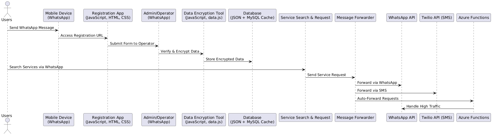

Inspired by Amartya Sen’s principles in “Development as Freedom” (1999), which emphasize the importance of communication for fostering social and economic opportunities, we have developed a system designed to securely connect users with service providers. This system leverages the power of local storage, encryption, and efficient communication tools like WhatsApp to ensure fast, secure, and reliable access to services, even in environments with limited internet connectivity.
Our system architecture uses a combination of local storage, encryption, and WhatsApp-based communication to optimize performance, reduce latency, and enhance user experience. By keeping most of the data stored locally on the device, the system ensures rapid access and efficient operations.
Registration URL:
Encryption Process:
Encryption Tool URL:
Service Search URL:
Message Forwarding Tool URL:
pako.To assess the performance of our system, we analyzed how different record sizes affect data retrieval and processing times. The table and chart below show the impact of storing data locally on access times.
| Number of Records | Data Size (MB) | Read Time (ms) | Parse Time (ms) | Total Time (ms) |
|---|---|---|---|---|
| 500 | 0.24 | 4.38 | 54.77 | 59.15 |
| 1,000 | 0.48 | 6.77 | 59.54 | 66.31 |
| 1,500 | 0.72 | 9.15 | 64.31 | 73.46 |
| 2,000 | 0.95 | 11.54 | 69.07 | 80.61 |
| 2,500 | 1.19 | 13.92 | 73.84 | 87.76 |
| 3,000 | 1.43 | 16.31 | 78.60 | 94.91 |
| 3,500 | 1.66 | 18.69 | 83.36 | 102.05 |
| 4,000 | 1.95 | 21.08 | 88.13 | 109.21 |
The chart highlights that as the number of records increases, both data size and access times grow. However, due to the data being stored locally, the system maintains efficient performance, making the search process extremely efficient for users.
The following UML sequence diagram illustrates the system’s interactions, from user registration to service search and request handling.
By leveraging local storage, encryption, and automated communication, our system is optimized for performance, security, and scalability. The architectural choice to store data locally ensures extremely fast searches, offline access, and reduced reliance on internet connectivity, which significantly enhances user experience. This design is not only efficient but also scalable, making it an ideal solution for connecting users with services while maintaining privacy and speed.